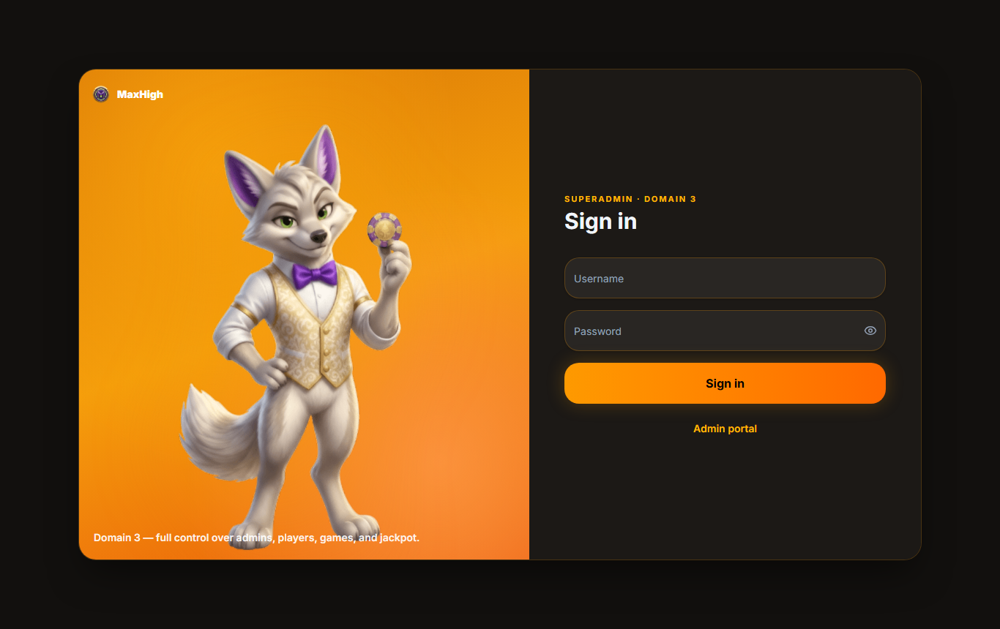
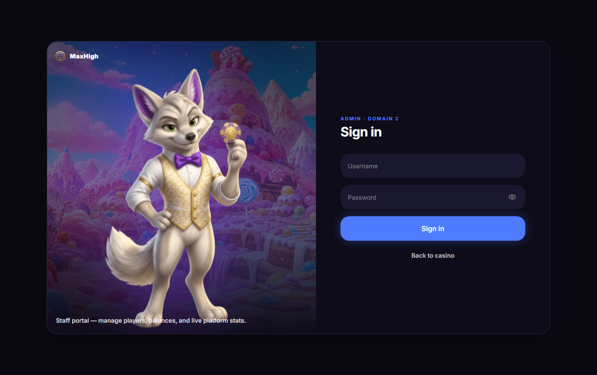
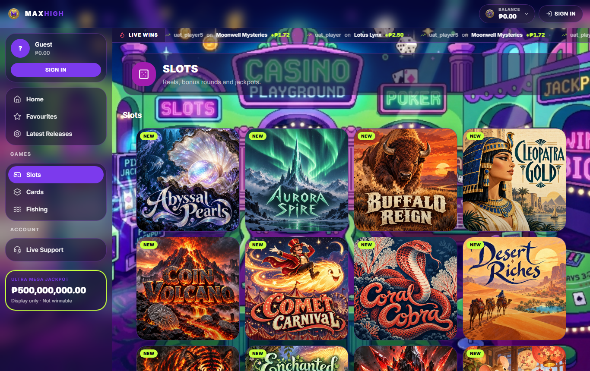

Game Configuration & Fine-Tuning Guide
A step-by-step guide for the owner of MaxHigh: how to sign in, review and change the settings of every game, check that a change worked, and undo it safely.
- Website
- https://maxhigh.online
- Software release
- {{SHA_SHORT}} (deployed 12 November 2026)
- Game settings read on
- {{READ_AT}}
- Games covered
- 50 games available to players
- Contains passwords?
- No. Passwords are delivered separately in an encrypted file.
Contents
- 0. Read this first
- 1. Accounts, roles and signing in
- 2. The Super Admin panel and the Games control page
- 3. Every game setting explained
- 4. Step-by-step: changing a game's settings
- 5. Fine-tuning: how the settings work together
- 6. Configuration examples
- 7. All 50 games: reference
- 8. Safety and best practices
- 9. Troubleshooting
- Appendix: record sheet and credential handover
0. Read this first
What this manual is based on
Everything in this manual was checked against the real MaxHigh system that is running on https://maxhigh.online (software release {{SHA_SHORT}}). The current values of each game were read directly from the live site, without changing anything. Where a screen could not be photographed, a clearly labelled diagram is shown instead. Diagrams copy the real screen layout, field names and buttons, but they are drawings, not photographs.
Where to sign in (verified 13 November 2026)
| Who | Sign-in address |
|---|---|
| Owner (Superadmin) | https://maxhigh.online/superadmin/login |
| Admin, Master agent, Agent | https://maxhigh.online/admin/login |
| Player | https://maxhigh.online, then the Sign in button |
There is no /agent page: agents and master agents use the same /admin/login page as admins. If you type an address that does not exist, you will see "page not found" (404). That is normal. The health-check address /api/health is deliberately hidden from the public.
uat.maxhigh.online runs an older software version, but it shares the same database as the live site. Settings saved there would change the live games too, possibly with screens that do not match this manual. Make live changes only through the production admin panel.In the rest of this manual, <admin address> means https://maxhigh.online.
Words used in this manual
| Word | Simple meaning |
|---|---|
| Bet / stake | The amount a player puts on one round, in pesos (₱). |
| Round / spin | One play of a game: one spin, one hand of cards, or one shot. |
| Multiplier (×) | A win shown as "times the bet". A 5× win on a ₱2 bet pays ₱10. |
| RTP | Return to Player. Over a very large number of rounds, the share of all bets that goes back to players as wins. 96% RTP means about ₱96 back for every ₱100 bet, on average, over a very long time. |
| House edge | The part the house keeps on average: House edge = 100% − RTP. A 96% RTP is a 4% house edge. |
| Hit rate | How often a round pays something. A 25% hit rate means about 1 in 4 rounds wins. |
| Volatility | How "swingy" a game feels. Low volatility: many small wins. High volatility: long dry spells and rare big wins. |
| Dead spin | A spin that is set up to have no winning combination at the start. |
| Weight | A "how common" number. A symbol with weight 40 appears twice as often as one with weight 20. Weights are compared with each other; they are not percentages. |
| Free spins / bonus | Extra rounds the player gets without paying, usually started by scatter symbols. |
| Win cap | The most one round can pay, written as "bet × number". With a ₱5 bet and a 10,000× cap, one round can never pay more than ₱50,000. |
| Ledger | The permanent record of every bet, win and balance change. |
1. Accounts, roles and signing in
The five account roles
Every MaxHigh account has exactly one role. The role decides which sign-in page works and what the account may do. The server checks the role on every action; a role cannot be faked from the browser, and refused attempts are written to the audit log.
| Role | Who it is for | Sign-in page | Can change game settings? |
|---|---|---|---|
| Superadmin | The owner (and the developer) | https://maxhigh.online/superadmin/login | Yes (only this role) |
| Admin | Client staff who run day-to-day operations | https://maxhigh.online/admin/login | No |
| Master agent | Senior agent who manages agents and players | https://maxhigh.online/admin/login | No |
| Agent | Agent who manages their own players | https://maxhigh.online/admin/login | No |
| Player | Customers who play the games | https://maxhigh.online, then the sign-in button | No |
What each role may do
| Permission | Superadmin | Admin | Master agent / Agent |
|---|---|---|---|
| See dashboard, reports, transactions, audit log | ✔ | ✔ | ✔ |
| List and create player accounts, lock/unlock, reset failed sign-ins | ✔ | ✔ | ✔ |
| Adjust a player's balance (recorded in the ledger) | ✔ | ✔ | ✔ |
| Edit account details, force a user to sign out, review wallet requests | ✔ | ✔ | — |
| Change roles | ✔ | — | — |
| Change game settings | ✔ | — | — |
| Jackpot, promotions, risk limits, system settings | ✔ | — | — |
Owner / Super Admin account
| Item | Details |
|---|---|
| Sign-in page | https://maxhigh.online/superadmin/login. See "Where to sign in" in Chapter 0. |
| Owner username | client_owner. This is the account the system recognises as the client owner. |
| Password | Not printed here. It is in the encrypted file MAXHIGH_OWNER_CREDENTIALS.enc, or must be set by a secure reset (see below). |
| Special rights | The client owner account may view and edit the settings of all games. It is also protected: only the owner can change it. |
| Developer account | uat_owner belongs to the developer, for support and testing. It is not for daily use by the owner. |

- Open
https://maxhigh.online/superadmin/login. - Type the username
client_ownerin Username. - Type your password in Password, then press Sign in.
- You see the message "Welcome, Superadmin" and arrive at the Command center.
Client accounts (staff: Admin, Master agent, Agent)
"Client accounts" are the staff accounts your business uses to run the casino: Admin, Master agent and Agent. They sign in on the staff portal and work under the owner's rules. They cannot change game settings, jackpots, promotions, risk limits or system settings. Those stay with the owner.

https://maxhigh.online/admin/login: "Sign in to the MaxHigh admin dashboard."- Creating staff accounts: in the Super Admin panel, open Admins. A username must be 3–64 characters using letters, numbers or underscore. A password must be at least 6 characters. Email is optional.
- Relationship to the owner: the owner creates staff accounts, can change their role, and can see everything they do in the audit log.
Player accounts
| Item | Details |
|---|---|
| Where players sign in | https://maxhigh.online, using the sign-in button at the top of the page. |
| Username | Each player's own username. Staff can look players up in Player List. |
| How players play | Choose Slots, Cards or Fishing in the left menu, tap a game picture, then press Play now. Every bet and win is written to the ledger straight away. |
| Wallet | The balance shows at the top right. Players see their own transaction history. Staff can adjust a balance; every adjustment is recorded with who made it. |
| Test players | Designated QA test players (for example uat_player5) exist for safe testing with small stakes. Do not use real customers' accounts for testing. |

Changing and resetting passwords
- There is no "forgot password" e-mail. Passwords are reset by staff inside the admin panel.
- As owner (Super Admin panel): open the account in Player List or Admins and edit it. Type the new password in New password (at least 6 characters; leave it blank to keep the current one), then save.
- As staff (staff portal): open the player and choose Reset Password, type the new password twice ("Enter new password (min 6 chars)" and "Re-enter password"), and save.
- Owner password: the owner account is protected. If you have lost it, ask your developer to reset it with you present, then change it to one only you know.
- Never send passwords by chat or e-mail. Use the encrypted file, or say them in person or by phone.
2. The Super Admin panel and the Games control page
After signing in you see the Command center. The menu on the left (on a phone, at the bottom) has these items:
| Menu item | What it is for |
|---|---|
| Command center | Overview of the platform. |
| Player List | Find, create and manage players; balances; password resets. |
| Admins | Create and manage staff accounts. |
| Games control | All game settings. This manual is mostly about this page. |
| Promotions | Player promotions. |
| Risk Control | Platform-wide bet and payout limits (see Chapter 3). |
| System Settings | Maintenance mode, header message, deposit and withdrawal limits. |
| Jackpot | Mega Jackpot amount and on/off switch; the "Ultra Mega Jackpot (Display Only)". |
| Staff actions | Audit log of what staff did. |
| Report | Win/Lose, Win/Lose By Product (per game), Win/Lose By Level, Transaction History, Chip Distribution Log. |
The Games control page
Open Games control. The page title is "Super Admin Game Control Panel". It has two parts:
Dead Spin %Win Chance %Max MultiplierRTP % (80–98%) Apply to All Games · change history table
[game picture][game picture][game picture]… click a game to open its settings
- A. Bulk panel: changes a few settings for many games at once. Every bulk change is saved with a before/after record in a change-history table on the same page.
- B. Per-Game Spot Overrides: a picture card for every game. Type in Search games… to find one, then click its card to open that game's full settings window.
A game's settings window
Clicking a game opens a large window titled "Game name Engine Configuration", with a row of tabs and a gold Save Config button at the top right.
Configure live RNG parameters, symbol weights, wild/bomb multipliers, and free spins.
Tag / BadgeRTP %Volatility
Min Bet (₱)Max Bet (₱)
3. Every game setting explained
Settings that change the game vs. labels only
This is the most important page in the manual. Some boxes really change how a game plays and pays. Others are only text shown to players. The system was checked to find out which is which:
| Setting | Where | Effect |
|---|---|---|
| Dead spin chance | Game window, all slots | CHANGES THE GAME fewer or more winning spins |
| Symbol weights and pay table | Symbols tab | CHANGES THE GAME which symbols appear and what they pay |
| Wild / bomb / orb chances and multiplier tables | Wilds/Bombs or Multipliers tab | CHANGES THE GAME |
| Free-spin trigger, number of spins, retrigger, buy price | Free spins tab | CHANGES THE GAME |
| Max win multiplier (win cap) | Game window and Bulk panel | CHANGES THE GAME limits the biggest possible win |
| Active RTP profile (Fire Spike, Coin Volcano) | RTP / Weights tab | CHANGES THE GAME switches to a different set of reel weights |
| Card payouts, fishing tiers, weapons, boss | Card and fishing tabs | CHANGES THE GAME |
| Min bet / Max bet | Lobby tab (slots); Limits tab (cards, fishing) | ENFORCED bets outside the range are refused with "Bet must be between …" |
| Enabled / Disabled | Game card | ENFORCED a disabled game refuses new bets: "Game is currently disabled" |
| RTP % box (Lobby tab), RTP target on card and fishing games | Lobby / Risk-RTP tab | LABEL ONLY shown to players; does not change payouts |
| RTP % in the Bulk panel | Bulk panel | LABEL / TARGET ONLY stored as a target number; no game engine uses it to change payouts |
| Win Chance % in the Bulk panel | Bulk panel | NO EFFECT stored, but no game currently reads it |
| Volatility, Tag / Badge, Featured, Sort order, Notes | Lobby tab / game card | LABEL ONLY display and ordering |
Settings found in every game: the Lobby tab
| Field | Meaning | Rules |
|---|---|---|
| Tag / Badge | Small label on the game picture, e.g. NEW or HOT. | Up to 32 characters. |
| RTP % | The RTP number shown to players. Display text only. | Keep it honest: match the game's real long-term results. |
| Volatility | Word shown to players, e.g. Low, Medium, High. Display only. | Up to 32 characters. |
| Min Bet (₱) / Max Bet (₱) | Smallest and largest bet accepted for one round. Enforced for all 41 slot games. | Min must be lower than Max. Also capped by the platform-wide Max Single Bet (see below). |
Settings by game family
The 50 games use six kinds of settings window ("families"). Games in the same family have the same tabs and fields, but their own values.
Family 1: Cluster slots ({{COUNT_CLUSTER}} games). Tabs: Lobby · Dead spin · Symbols · Wilds/Bombs · Free spins
| Field (screen name) | What it does | Allowed range |
|---|---|---|
| Dead Spin Chance (slider) | Chance that a spin starts with no winning cluster. Higher = fewer wins. | 0–100% |
| Seed bias (e.g. "Seed Q (Melon) Bias") | When the game places a starting cluster, how often it uses the main low symbol. | 0–100% |
| Seed cluster min / max | Size of a placed starting cluster. | 3–20 symbols |
| Max win multiplier | Win cap: one round never pays more than bet × this number. | 0–100,000× |
| Symbol Weight | How common each symbol is. The screen shows each symbol's "% spawn". | 0–10,000 |
| Symbol pay table (3 values) | What a winning cluster of that symbol pays, by cluster size. | 0–1,000,000 |
| Wild/Bomb probabilities | Chance of a bomb (multiplier) symbol in the base game and in free spins, plus the table of bomb values (2×, 3×, 4×, 5×) and their weights. | Chance 0–100%; free-spin bomb total capped at 5× |
| Trigger Scatters / Base Free Spins | How many scatters start the bonus, and how many free spins it gives. | Free spins 1–100 |
| Retrigger Scatters / Retrigger Spins | How many scatters add extra spins during the bonus, and how many. | Extra spins 0–100 |
| Buy feature / super buy price | Price to buy the bonus directly, as "bet × number". | 1–10,000× |
| Ante bet multiplier | Cost of the optional "ante" bet (raises scatter chance). | 1–5× bet |
| Max free-spin session spins | Safety limit on how long one bonus can last. | 0–200 spins |
Family 2: Realms slots ({{COUNT_REALMS}} games). Tabs: Lobby · Hit rate · Symbols · Multipliers · Free spins & buy
The same ideas as cluster slots, with friendlier screen text. The Lobby tab ("Game card") says plainly: "Display text only. None of this changes how the game plays or pays", except for Bet range, which "The server checks every wager against". The Hit rate tab holds Dead spin chance, Seed bias toward Q, Seed cluster min/max and Max win multiplier ("A round's payout is cut down to bet × this number"). The Multipliers tab holds the orb chances (Base game chance, Free spins chance), the caps (Base multiplier cap, Free spins multiplier cap) and Multiplier values with weights. An "Unsaved changes in this tab" notice shows which tabs you have edited.
Family 3: Lines slots with RTP profiles ({{COUNT_VOLCANO}} games: Fire Spike, Coin Volcano). Tabs: Lobby · Symbols · Mix / Jackpot · RTP / Weights · Risk / Cap
These are classic 5-reel, 3-row slots with 10 paylines. Their special feature is the Active RTP profile, a choice between three ready-made sets of reel weights: 96.5%, 95.5% and 94.5%. The lower profiles make the high-paying symbols, wilds and scatters a little rarer. Changing the profile does change the game. The percentages are the designer's targets, not measured results. Mix / Jackpot controls the instant-prize mix and the grand jackpot multiplier. Risk / Cap holds the win cap.
Family 4: Fishing games ({{COUNT_FISHING}} games). Tabs: Lobby · Fish Tiers · Weapons · Boss · Risk / RTP
| Field | What it does |
|---|---|
| Fish tier: Payout min/max, Hits min/max, Hit chance, Spawn weight | For each kind of fish: the range of what it pays, how many hits it takes, the chance a hit counts, and how common it is. |
| Weapon: Bet cost (₱), Hit modifier | The price of one shot for each weapon (this is the player's bet), and that weapon's adjustment to the hit chance. |
| Boss: Spawn chance / tick (0–0.25), Cooldown (sec), Duration (sec), Finisher share, Contributor share | How often the boss appears, how long it stays, and how its prize pot is split between the finishing shot and other contributors. |
| Max hit chance cap | Upper limit on any hit chance after modifiers. Lower = harder to catch fish. |
| Max fish on screen, Spawn interval (sec) | How busy the screen is. |
| Target RTP % | Label/target only (allowed 80–99.5). |
Family 5: Card tables ({{COUNT_CARDS}} games: Ace High, Baccarat, Lucky 9, Three Card Poker)
Tabs are similar for all four: Lobby, Payouts (or Payouts / Draw, Payouts / Bonus), Limits / Shoe (Ace High: War / Shoe) and Risk / RTP.
- Payouts: what each bet pays, e.g. Baccarat Player 1:1, Banker 0.95:1 (5% commission), Tie 8:1, Pairs 11:1. Ace High: "Base payout mult" (2 = even money), "Tie side-bet mult", "Ace Bonus".
- Limits: a separate min/max for each bet type (e.g. Player, Banker, Tie, Pairs), plus "Quick-bet steps (₱)" for the chips. These limits are enforced. The Lobby min/max boxes on card tables are display text.
- Shoe: number of decks and when the shoe is reshuffled ("Reshuffle below fraction"; 0.25 = when a quarter is left).
- Risk / RTP: "Max win mult" caps the total win of one round (Ace High). "Target RTP %" is a label.
Family 6: Color Game ({{COUNT_COLOR}} game). Tabs: Lobby · Colors / Pays · Limits
Colors / Pays lists the six colours with a Weight (how often each colour lands) and its display colour (Hex). Limits has Min spot bet, Max total bet, Max per spot and Chip steps (comma-separated chip values). "RTP target % (display)" is a label.
Platform-wide controls (affect every game)
| Control (page) | Effect |
|---|---|
| Max Single Bet Limit (₱) (Risk Control) | No single bet in any game can be larger than this, whatever the game's own Max Bet says. |
| Max Daily Payout Limit (₱), Weekly Limit Setting (₱), Auto-Flag Large Wins (Risk Control) | Payout limits and automatic flagging of large wins for review. |
| Maintenance Mode (System Settings) | Stops all new bets on every game: "Platform is currently under scheduled maintenance. Betting is locked." |
| Mega Jackpot (Jackpot) | Set the jackpot amount and switch it on or off (Toggle Mega Jackpot). Assign Jackpot Win to Specific Player awards it manually. |
| Ultra Mega Jackpot (Display Only) (Jackpot) | A display amount. The site labels it "Display only · Not winnable". |
4. Step-by-step: changing a game's settings
- Sign in. Open
https://maxhigh.online/superadmin/login, enterclient_ownerand your password, press Sign in. - Open Games control. Click Games control in the left menu (on a phone the menu item is called Games).
- Select the game. Under "Per-Game Spot Overrides", type part of the name into Search games… and click the game's picture. The "… Engine Configuration" window opens and shows "Loading engine configuration…" for a moment.
If you see "Failed loading engine config — using defaults"Close the window without saving. Saving now would replace the live settings with factory defaults. Try again later or contact support.
- Review and record the current settings. Go through every tab. Write the values you plan to change on the record sheet in the Appendix, or take a photo of the screen. This is your way back: there is no "undo" or "restore defaults" button.
- Adjust the settings. Change one or two values at a time, never many at once. Use the tables in Chapters 3 and 5 to understand each one.
- Understand the effect before saving. Ask yourself: will this make wins more or less frequent? Bigger or smaller? Does it raise or lower the most a round can pay? (See Chapter 5.)
- Save. Press Save Config at the top right. Wait for the green "… settings saved" message. The window closes.
- Verify the change was applied. Open the same game again and check that your new values are shown. The server may quietly adjust a value that is out of range to the nearest allowed value (for example 150% becomes 100%), so check the actual numbers. The save is also recorded in the audit log (Staff actions), with your username and the main values.
- Test the game safely. Sign in on
https://maxhigh.onlinewith a designated QA test player, open the game, and play a few rounds at the minimum bet. Check that it loads, spins and pays normally, and that the balance changes match the transaction history. Never test with a real customer's account. - Restore the previous settings if necessary. Open the game again, type the values from your record sheet back in, and press Save Config. For bulk changes, the change-history table on the Games control page shows the earlier values.
Using the Bulk panel
- On Games control, choose the Scope: all games, slots, cards or fishing.
- Set Dead Spin % (0–100), Max Multiplier (at least 1×), and if you wish Win Chance % and RTP % (80–98%). Remember that the last two are labels only.
- Press Apply to All Games (or, for a smaller scope, "Apply to slots" etc.). If you have unsaved changes it reads Save & apply to …. The message shows how many games were updated: "Bulk updated N games! …".
- Check the new row in the change-history table (time, who, scope, number of games, values).
5. Fine-tuning: how the settings work together
The basic relationship
Over a very long run, the money paid back depends on two things: how often a round pays, and how much it pays on average when it does:
EXAMPLE If 25% of rounds win, and the average win is 3.84× the bet, then RTP ≈ 0.25 × 3.84 = 0.96 = 96%, a house edge of 4%. To keep the same RTP with fewer wins (say 20%), the average win must be bigger: 0.96 ÷ 0.20 = 4.8×.
Bonus features count too. Free spins, multipliers and jackpots are part of the "average win". A game with a strong bonus can have a low base-game hit rate and still return a normal RTP.
What each setting moves
| If you… | Hit rate | Average win | Volatility | Return (RTP) |
|---|---|---|---|---|
| Raise Dead spin chance | ▼ lower | — | ▲ higher | ▼ lower |
| Raise weights of low-paying symbols | ▲ higher | ▼ smaller | ▼ lower | depends |
| Raise weights of high-paying symbols | small ▲ | ▲ bigger | ▲ higher | ▲ higher |
| Raise pay table values | — | ▲ bigger | — | ▲ higher |
| Raise bomb/orb chance or bigger multiplier values | — | ▲ bigger | ▲ higher | ▲ higher |
| Give more free spins / easier trigger | — | ▲ bigger | ▲ higher | ▲ higher |
| Lower the win cap | — | ▼ slightly | ▼ lower | ▼ slightly |
| Choose a lower RTP profile (Fire Spike / Coin Volcano) | ▼ slightly | ▼ | — | ▼ (≈1% per step) |
| Lower a card payout (e.g. Tie 8:1 → 7:1) | — | ▼ | — | ▼ |
| Lower fishing hit chance or Max hit chance cap | ▼ | — | ▲ | ▼ |
Designing the feel of a game EXAMPLES
| Intended feel | What to adjust (cluster / Realms slots) | What players notice |
|---|---|---|
| Low volatility (steady, relaxed) | Lower dead spin chance (e.g. 82% → 75%); slightly raise weights of low symbols; lower the pay of the top symbol; keep bombs rare; moderate win cap. | Frequent small wins, balance moves slowly, few big moments. |
| Medium volatility (balanced) | Keep the current values (most games are tuned here). | A mix of small wins and occasional bonuses. |
| High volatility (thrilling) | Raise dead spin chance (e.g. 82% → 86%); raise bomb chance in free spins or the multiplier values; keep or raise the win cap. | Long dry spells, rare big wins. Losing streaks can upset casual players. |
| More frequent payouts | Lower dead spin chance and lower pay values a little to balance it. | "Always something happening." |
| Bigger but rarer payouts | Raise dead spin chance and raise top-symbol pay or multipliers. | Fewer, more exciting wins. |
| Different bet range | Change Min Bet / Max Bet (Lobby tab for slots; Limits tab for cards and fishing). Stay under the platform Max Single Bet Limit. | Who the game suits: small-stake players or high rollers. Bet range does not change RTP. |
| Bonus behaviour | Free spins tab: trigger scatters, base free spins, retrigger. Buy price on the same tab. | How often the bonus starts and how long it lasts. |
| Jackpot behaviour | Jackpot page (Mega Jackpot amount and on/off); Fire Spike / Coin Volcano: grand jackpot multiplier on the Mix / Jackpot tab. | Size and availability of jackpots. |
6. Configuration examples
"Current" values are LIVE values read from the production site on {{READ_AT}}. "Example adjustment" values are EXAMPLE values for illustration. Test any change before relying on it.
Cluster slot: Fortune Tiger
| Setting | Current | Example adjustment | Expected effect | Precautions |
|---|---|---|---|---|
| Dead Spin Chance | 82% | 78% | More spins with a win; higher return | Change in steps of 1–2%; watch Win/Lose By Product |
| Max win multiplier | 10,000× | 5,000× | Biggest possible win halves (₱5 bet: ₱25,000 instead of ₱50,000) | Players who know the game may notice |
| Base Free Spins | 10 | 12 | Longer bonus; higher return | Raise buy price to match |
| Trigger Scatters | 4 | 5 | Bonus starts much less often | Big effect: test carefully |
| Bomb chance (base / free spins) | 1.5% / 3% | 1.5% / 4% | More multipliers in the bonus; higher volatility | Free-spin total multiplier stays capped at 5× |
| Min / Max Bet | ₱0.10 / ₱100 (catalog) | ₱0.20 / ₱50 | Narrower range; no effect on RTP | Min must stay below Max |
Lines slot: Fire Spike
| Setting | Current | Example adjustment | Expected effect | Precautions |
|---|---|---|---|---|
| Active RTP profile | 96.5% | 95.5% | Slightly rarer top symbols, wilds and scatters; about 1% lower long-term return (designer's target) | The safest way to tune these two games |
| Max win multiplier | 25,000× | 10,000× | Lower ceiling | Grand jackpot is also 25,000×; keep them consistent |
Fishing: Deep Bass
| Setting | Current | Example adjustment | Expected effect | Precautions |
|---|---|---|---|---|
| Max hit chance cap | 0.92 | 0.88 | Fish slightly harder to catch; lower return | Too low feels unfair |
| Spawn interval | 1.4 s | 1.2 s | Busier screen; does not change return per shot | Busier screens can feel laggy on old phones |
| Engine min / max bet | ₱0.10 / ₱25 | ₱1 / ₱25 | Cheapest shot costs more | Weapon bet costs must fall inside this range |
Card table: Baccarat
| Setting | Current | Example adjustment | Expected effect | Precautions |
|---|---|---|---|---|
| Tie payout | 8:1 | 9:1 | Tie bet pays more; higher return on ties | Standard tables pay 8:1 |
| Banker payout | 0.95:1 (5% commission) | (keep) | — | Changing this has a big effect on the house edge |
| Player / Banker limits | ₱1 – ₱500 | ₱5 – ₱1,000 | Higher-stakes table | Max must stay within Max Single Bet Limit |
| Decks | 8 | 6 | Very small effect | — |
Live values of all 50 games are in Chapter 7 and in the file MAXHIGH_50_GAMES_CONFIGURATION_REFERENCE.csv.
7. All 50 games: reference
How to configure any game: Games control → search for the game → click its picture → use the tabs for its family (Chapter 3) → Save Config. Games in the same family have identical controls. The table shows each game's family, how its bets are limited, and its current live key settings ({{READ_AT}}).
| Family | Games | Tabs |
|---|---|---|
| Cluster slot | {{COUNT_CLUSTER}} | Lobby · Dead spin · Symbols · Wilds/Bombs · Free spins |
| Realms slot | {{COUNT_REALMS}} | Lobby · Hit rate · Symbols · Multipliers · Free spins & buy |
| Lines slot (RTP profiles) | {{COUNT_VOLCANO}} | Lobby · Symbols · Mix / Jackpot · RTP / Weights · Risk / Cap |
| Fishing | {{COUNT_FISHING}} | Lobby · Fish Tiers · Weapons · Boss · Risk / RTP |
| Card table | {{COUNT_CARDS}} | Lobby · Payouts · Limits / Shoe · Risk / RTP |
| Color Game | {{COUNT_COLOR}} | Lobby · Colors / Pays · Limits |
Slot bet limits shown are catalog defaults; the Lobby tab shows any override saved by the owner. "RTP label" values are display text, not measured results.
8. Safety and best practices
Avoiding invalid settings
- The server never accepts impossible values. Out-of-range numbers are quietly moved to the nearest allowed value when you save. That is why you must re-open the game after saving and check the real numbers (Chapter 4, step 8).
- Min bet must be lower than max bet, and both must stay under the platform Max Single Bet Limit. Otherwise players see "Bet must be between …" or "Max bet is ₱…".
- Do not set all symbol weights to 0, a dead spin chance of 100%, or a win cap of 0. These make a game pay nothing or almost nothing.
- Change one or two values at a time, in small steps.
Protecting player balances and transactions
- Changing a game's settings never changes any balance or past transaction. Settings only affect future rounds.
- Every bet, win and balance adjustment is written to the ledger inside a database transaction, so balances cannot go below zero or get out of step.
- Balance adjustments by staff are separate actions, are recorded with the staff member's name, and on the Super Admin side require your password to confirm.
How changes affect games that are being played
- New settings apply to the next round a player starts.
- Rounds already paid for, such as free spins in progress or an open card hand, finish normally.
- Switching a game to Disabled stops new bets in that game. Maintenance Mode stops new bets in all games.
Testing before relying on a change
- Make the change in a quiet period.
- Test with a designated QA test player at the minimum bet (Chapter 4, step 9).
- Watch Report → Win/Lose By Product for that game over the following days.
- If the results are not what you wanted, restore the recorded values.
Restoring previous settings
- Per-game: no automatic undo and no "restore defaults" button. Type your recorded values back in and press Save Config.
- Bulk panel: the change-history table shows earlier values (the system also stores a full before/after snapshot). Re-apply the earlier values.
- Serious problem: your technical administrator has database backups (a verified backup was taken on 12 November 2026 before the latest release). Restoring a database backup would also undo real players' activity since then, so it is a last resort decided with your developer.
Preventing unintended changes
- Only Superadmin accounts can change game settings. Keep the number of Superadmin accounts as small as possible.
- Use a strong owner password that only you know. Sign out when you finish.
- Every game settings save, every bulk change and every refused attempt is recorded. Check Staff actions regularly.
- Keep the record sheet (Appendix) for every change: date, game, old value, new value, reason.
9. Troubleshooting
| Problem | Likely cause | What to do |
|---|---|---|
| The admin page shows "not found" (404) | The address is wrong (there is no /agent page), or the web server setting was reverted. | Use https://maxhigh.online/superadmin/login (owner) or https://maxhigh.online/admin/login (admin, master agent, agent). If those pages show 404, tell your technical administrator: the public Caddy staff rule may have been restored. |
| "Superadmin account required" after signing in | The account is not a Superadmin. | Sign in with client_owner. |
| Configuration not saving: red error message | Session expired, no permission for that game, or a server error. | Read the message. Sign out and in again, then retry. If it continues, note the time and message and contact support. |
| "Game Locked. Please settle the remaining project payment…" | That game is commercially locked. | Contact your developer. |
| Saved value is different from what I typed | The value was outside the allowed range and was adjusted. | Check the ranges in Chapter 3 and choose a value inside them. |
| Changes are not reflected in gameplay | (1) The change was not saved (window closed without Save Config). (2) You changed a label-only box such as RTP % or Volatility. (3) A player is finishing an earlier paid round. | Re-open the game and check the values. Remember label-only fields (Chapter 3). Start a new round to test. |
| "Failed loading engine config — using defaults" | The live settings could not be loaded. | Do not save. Close the window and try again later. |
| Players see "Bet must be between X and Y" | The bet is outside the game's Min/Max Bet. | Check the Lobby tab (slots) or Limits tab (cards/fishing). |
| Players see "Max bet is ₱…" | Bet is above the platform Max Single Bet Limit. | Raise the limit on Risk Control, or lower the game's Max Bet. |
| Players see "Game is currently disabled" | The game is switched off. | Switch it to Enabled on its game card. |
| Players see "…under scheduled maintenance. Betting is locked." | Maintenance Mode is on. | Switch it off in System Settings. |
| Unexpected payouts (too many or too few wins) | Normal short-term luck, a recent change, or a bulk change that overwrote a game. | Check the change history and Staff actions. Compare with your record sheet. Judge only over many rounds. |
| A setting I expected is missing | That game's family does not have it (e.g. RTP profiles exist only for Fire Spike and Coin Volcano). | See Chapter 3 for each family's controls. |
| A game does not load after a change | Rare: a browser problem or an extreme setting. | Reload the page. If it persists, restore the recorded values. If it still fails, disable the game and contact support. |
Rollback procedures
| What went wrong | How to undo it | Who |
|---|---|---|
| A game setting change gave bad results | Open the game's configuration, type the old values from your record sheet, and press Save Config. Player balances and past bets are never changed by this. | Owner |
| A new software release misbehaves | The administrator runs the release's pinned rollback command (operate.py rollback). It restores the previous application only. It does not restore the database over live records and never deletes accounts or money records. | Technical administrator |
| The staff sign-in pages need to be hidden again | Restore the saved Caddy backup (/etc/caddy/Caddyfile.bak-<date>), validate it, and reload Caddy. Procedure: deploy/production/CADDY_STAFF_ROUTES_FIX.md. | Technical administrator |
Appendix: record sheet and credential handover
Change record sheet (print and copy)
| Date / time | Game | Setting | Old value | New value | Reason / result |
|---|---|---|---|---|---|
Credential handover
Passwords are never printed in this manual. They are handed over in the separate encrypted file MAXHIGH_OWNER_CREDENTIALS.enc. The password that opens that file is given to you separately, in person or by phone, never in the same message as the file.
- Open it on your own computer with the
Unprotect-MaxHighCredentials.ps1tool that comes with it. - Any account listed as "requires secure reset" has no known password on record. Reset it inside the admin panel (Chapter 1), with your developer if it is the owner account.
- After you receive them, change the passwords to new ones only you know.
MaxHigh Owner's Manual · release {{SHA_SHORT}} · built {{BUILT_AT}}